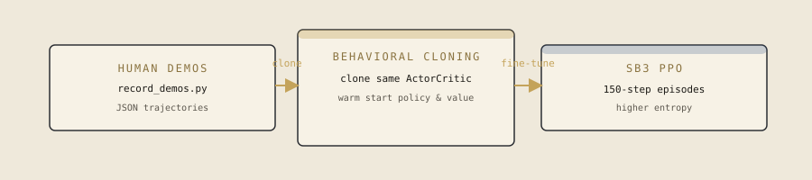
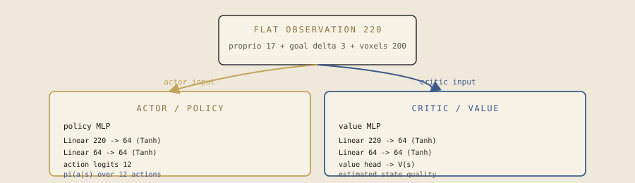

Bridging
Place blocks underfoot across a five-block diagonal gap, finishing four blocks east. Inventory, sneak, and a ray-cast feed the strongest recorded SB3 PPO policy.
Forward pass
One successful rollout drives both panels. The third-person frame on the left is paired step-for-step with the real SB3 actor/value activations, action probabilities, and observation readout on the right.
clip · F5
Paired clip unavailable.
The replay falls back to a synthetic diagonal crossing.
—
How it is trained
Record human crossings, clone the policy, then fine-tune with Stable-Baselines3 PPO. Longer episodes than parkour (150 steps) and a stronger entropy bonus — sneaking then placing is a conjunction random exploration rarely finds.


Full lab notes: bridging report.